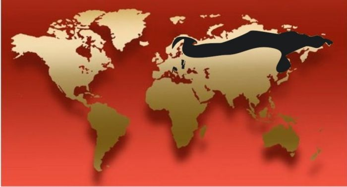
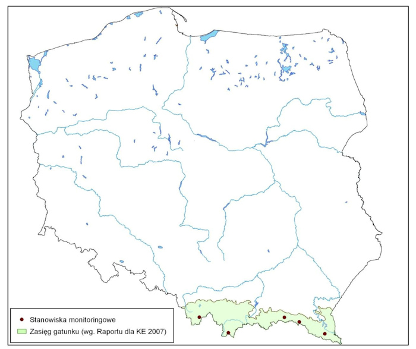

Występowanie
W Europie niedźwiedź brunatny występuje wyspowo w górach Półwyspu Skandynawskiego, Karelii, Pirenejach, Apeninach, Alpach, Karpatach i na Półwyspie Bałkańskim. Większe obszary zajmuje w Europie Wschodniej i Azji – głównie na Syberii, w Mongolii, Mandżurii, na Kaukazie, w Iranie, Tybecie. Azji Centralnej i Mniejszej, a nawet w Japonii. Zwierzęta te zasiedlają także Alaskę, północną część Kanady i Góry Skaliste.
Niedźwiedź brunatny zasiedla rozległe lasy nizinne i górskie, zarówno bory (tajgę), jak i żyzne lasy liściaste. Wielkość terytorium osobniczego tych zwierząt wynosi od 23 do 500 km2, a w niektórych przypadkach może nawet przekraczać 1000 km2. Niestety na skutek działalności człowieka, a zwłaszcza eksploatacji i fragmentaryzacji lasów oraz rozwijającego się ruchu turystycznego ostoje tych zwierząt uległy zmniejszeniu.
Historia niedzwiedzi w Polsce
W czasach historycznych niedźwiedź brunatny występował na terenie całego kraju. Mimo, iż był chroniony prawem jako królewskie zwierze łowne (jedynie królowie i arystokraci mogli polować na niedźwiedzie), tępiono go bezwzględnie wszelkimi sposobami. W XVIII wieku niedźwiedź był uznawany za szkodnika. Aby go zabić, zastawiano wymyślne pułapki - pod drzewami z gniazdami pszczół kopano w lesie doły najeżone ostrymi palami. W czasach chronicznego ubóstwa ówczesnego okresu niedźwiedzie mięso, tłuszcz oraz futro miały ogromną wartość. Nadmierne polowania oraz postępująca degradacja siedlisk spowodowały stopniowe ustępowanie gatunku z coraz większych obszarów. Począwszy od XVI wieku eksterminacja stała się jeszcze bardziej intensywna i wkrótce występowanie gatunku zostało ograniczone do Karpat. Do końca I wojny światowej w kraju przetrwało tylko kilka osobników. Ostoją niedźwiedzi na Niżu Polskim stała się Puszcza Białowieska, ale i tam ostatni osobnik został zabity pod panowaniem rosyjskim w końcu XIX wieku. Po II wojnie światowej liczbę niedźwiedzi w nowych granicach Polski oszacowano na 10-14. Przetrwały jedynie w Tatrach i Bieszczadach. Liczebność ta utrzymywała się do lat 60., kiedy silnie zredukowana populacja niedźwiedzia brunatnego powoli zaczęła się odradzać. Największy wzrost liczby niedźwiedzi odnotowano w Bieszczadach, gdzie duże obszary zostały praktycznie wyludnione w 1947 roku w wyniku ukraińskiej przymusowej deportacji Polaków zamieszkujących południowo-wschodnią część kraju.
Aktualne statystyki
Obecnie liczbę niedźwiedzi w polskiej części Karpat szacuje się na około 100-120 osobników (należy jednak zauważyć, że liczebność nigdy nie została wiarygodnie oceniona). Polska populacja niedźwiedzia brunatnego leży na granicy zasięgu populacji karpackiej, której liczebność szacuje się na około 8000 osobników. W polskiej części Karpat wyróżniono pięć głównych ostoi gatunku. Są nimi: Bieszczady, Tatry, Beskid Niski, Beskid Żywiecki, Beskid Sądecki oraz Gorce. Dla polskiej populacji niedźwiedzia brunatnego najcenniejszym obszarem są Bieszczady będące domem dla ponad 70% populacji.
Monitoring
Prowadzony od 1982 roku monitoring niedźwiedzia brunatnego w Polsce polega na corocznym gromadzeniu informacji o miejscach występowania tych zwierząt, ich rozrodzie i aktualnej liczebności. Dodatkowo została uruchomiona baza, służąca do zbierania danych dotyczących miejsc gawrowania, pokarmu i żerowania, przypadków śmierci, wypadków agresji w stosunku do człowieka czy dalekich migracji. Nad powodzeniem całego przedsięwzięcia czuwa Instytut Ochrony Przyrody PAN w Krakowie, który dokonuje analiz oraz opracowuje odpowiednie zalecenia, m.in.: Program Ochrony Niedźwiedzia Ursus arctos w Polsce.
Obserwacja niedźwiedzi w terenie jest niezwykle trudna ze względu na skryty tryb życia i rozległość ich areałów życiowych. Poszczególne tropy, ślady żerowania lub gawry są zazwyczaj wykrywane przypadkowo, dlatego prowadzenie monitoringu tych zwierząt wymaga zaangażowania znacznej ilości współpracowników. Bardzo dobrymi informatorami są w tym przypadku pracownicy parków narodowych i nadleśnictw.
W Polsce, dzięki objęciu niedźwiedzia ochroną, udało się ocalić te zwierzęta przed wyginięciem. Jednak ludzie, którzy zaczęli wchodzić na terytorium niedźwiedzia, znów zaczęli mu zagrażać. Obecnie największym zagrożeniem dla polskich niedźwiedzi jest nieodpowiedzialne zachowanie człowieka.